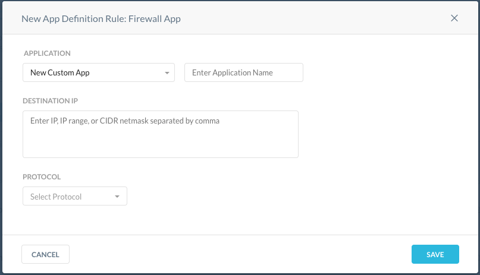

App Definition
To open the App Definition page, go to Settings > Security Cloud Platform Security Cloud Platform > Traffic Steering > App Definition.
To find an application, definition details, host, or publisher use the search bar. If no results are found, then add the app definition or app.
The App Definition page allows you to define new app definition rules for firewall apps.
From the App Definition list page click the Manage Custom Apps button to view a list of your custom apps. You can delete the apps and view general information about them. If a newly created app does not appear in the list, click the Apply Changes button from the list page. Any app used in an Inline Policy cannot be deleted from this list. Remove the app from the policy and then delete.
Click the gear icon  to customize columns. By default, all options are visible in the list page. You can deselect the options to hide them from view. Optionally, click the Restore Default button to view all the options.
to customize columns. By default, all options are visible in the list page. You can deselect the options to hide them from view. Optionally, click the Restore Default button to view all the options.
Click the three dots or ellipses at the end of the App Definition Rule name to edit the rule, Add to Steering (only available for cloud apps), or delete the rule. If you edit a rule, you must click the Apply Changes button to apply the rule.
Create a New App Definition Rule: Firewall App
This section describes how to create a new app definition rule for a firewall app. You create app definitions to apply to policies. Admins can create multiple rules for the same firewall app. For example, an admin creates an app called "Allow_FTP" with a certain destination IP and protocol. This same app can be reused to add more destination IPs and protocols.
Note
Custom apps that have only have traffic-based definition rules will not have activities detected. You cannot add Firewall apps to Steering.
Click Security Cloud Platform > Traffic Steering > Cloud & Firewall Apps > New App Definition Rule.

Click Firewall App.
Enter a meaningful app name in the Application Name field.
You can select the Custom App list. Start typing the firewall custom app names in the search field, and the field will auto-populate with the firewall custom apps associated with your tenant. New Custom App is the default. A firewall custom app cannot have the same name as a cloud custom app.

Enter the Destination IP field enter a valid IP, IP range, FQDN (partial domains are supported as well), or CIDR netmask separated by commas.
Note
If you keep the Destination IP field empty, it means the destination IP is set to 'Any'. However, the Protocol field is mandatory. Select, None for protocol if you do not want to define a protocol.
Select the protocol for the firewall app. For the TCP, UDP, TCP/UDP options, enter a port, port range, or ports, and port ranges separated by commas. For example:
- Enter a specific port: 22
- Enter a specific port range: 1024-2048
- Enter ports and port range(s): 22,80,443,1024-2048
For the ICMP option, there is no port configuration. A TCP flow times out after 5 minutes of idle time. It is recommended to use a keepalive for TCP-based protocols that may leverage longer idle sessions such as SSH, FTP, etc.
Click Save to add the App Definition Rule for a firewall app.
Important
The ordering of custom application definitions and policies are handled as follows:
- Firewall apps - App that matches first in the policies list is picked, i.e. the app matches by the policy ordered list.
- Cloud apps - The system finds the most specific application first then matches by the policy ordered list.
If the app matches both Cloud and Firewall apps as described above (i.e. there is overlap), the system will use policy ordering to resolve the conflict.